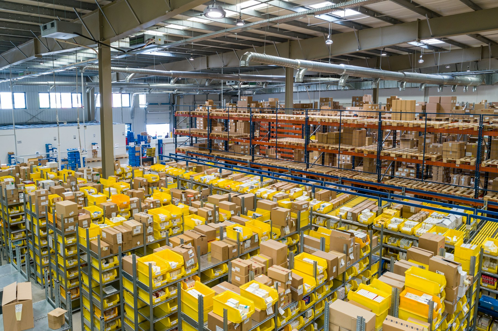

For buyers
Compare supply, publish precise RFQs, and build a reliable shortlist without losing context.
Find supply →The operating system for African trade
Borderless connects verified buyers, exporters, and agricultural opportunities in one clear place, so trade can move from first signal to qualified conversation.

One place. Every trade move.
Trade is too important to be fragmented. Borderless brings the people, products, requests, and signals you need into a single, human-centered workspace.
The Borderless toolkit
Three focused products. One shared view of the market.
The Borderless trade journey
Start with a need or a product. Borderless brings the right people, trust, and workflow around the movement of goods.
Built for the people moving trade
Whether you source, sell, or coordinate the movement, Borderless gives your next decision a stronger starting point.
Compare supply, publish precise RFQs, and build a reliable shortlist without losing context.
Find supply →Put your products in front of serious buyers and turn availability into qualified demand.
List your products →Keep market discovery, supplier conversations, and operating signals together as your team scales.
Open the hub →Market pulse
Fresh listings, active requests, and on-the-ground context help you act before the market gets noisy.
Browse live listings ↗Your next move starts here
Join the network connecting the next generation of global trade.